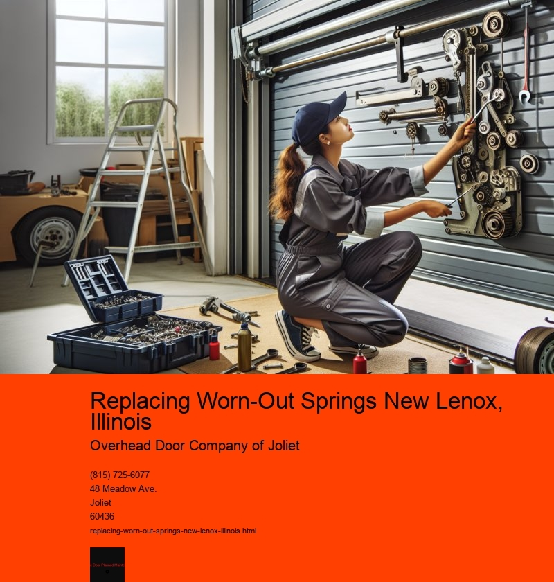

In the charming village of New Lenox, Illinois, a place known for its friendly community and serene landscapes, the care and maintenance of homes are a testament to the residents pride in their surroundings. Among the myriad of tasks that homeowners undertake to keep their homes in pristine condition, replacing worn-out springs is a maintenance activity that often goes unnoticed, yet it plays a crucial role in the functionality and safety of various household systems.
Springs, although small and often hidden, are integral components in many everyday items, from garage doors to mattresses, and even in some plumbing fixtures. Over time, these springs can wear out due to constant use, exposure to the elements, or simply because of age. In New Lenox, where the seasons bring both sweltering summers and harsh winters, the wear and tear on these components can be accelerated, necessitating timely replacement.
Garage doors, for instance, heavily rely on torsion and extension springs to function smoothly. These springs counterbalance the weight of the door, making it easy to open and close. A worn-out spring can lead to a malfunctioning door, posing not only an inconvenience but also a potential safety hazard. Imagine a garage door that suddenly slams shut or refuses to budge-it's not just a nuisance but a risk to both people and property.
In New Lenox, proactive homeowners understand the importance of regular maintenance checks. Local contractors and handymen often offer services specifically for inspecting and replacing garage door springs. This task, while seemingly simple, requires a certain level of expertise. The tension in these springs can be dangerous if not handled correctly, and professional intervention ensures that the task is completed safely and efficiently.
Beyond garage doors, springs also find their way into furniture and bedding. Mattresses, especially those of the innerspring variety, rely on a network of coils to provide support and comfort. Over time, these springs can lose their elasticity, leading to sagging mattresses that no longer offer the necessary support for a good night's sleep. In a community that values quality of life, like New Lenox, replacing or repairing these springs can rejuvenate a mattress, extending its life and enhancing sleep quality.
The replacement of worn-out springs is not just about maintaining functionality; it is also about ensuring safety and comfort. In New Lenox, where community well-being and home aesthetics are deeply valued, this simple act of maintenance reflects broader values of care, responsibility, and pride. Homeowners here understand that a well-maintained home contributes to the overall harmony and appeal of the neighborhood.
In conclusion, while the task of replacing worn-out springs might seem trivial, it is an essential aspect of home maintenance in New Lenox, Illinois. It ensures that homes remain safe, comfortable, and functional, which in turn supports the community's reputation as a desirable place to live. As residents continue to care for their homes with diligence and attention to detail, they preserve the charm and vitality of this beautiful village, ensuring it remains a haven for future generations.
Adjusting or Replacing Cables New Lenox, Illinois
